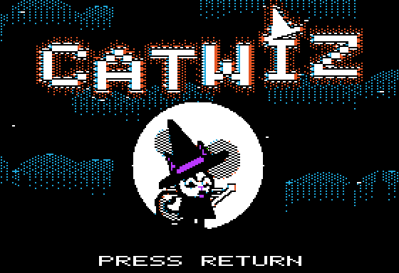
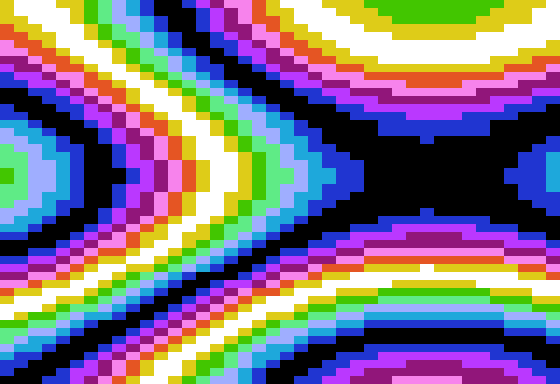
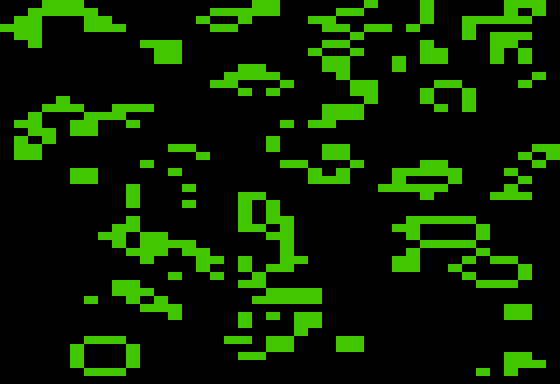
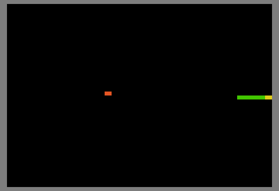
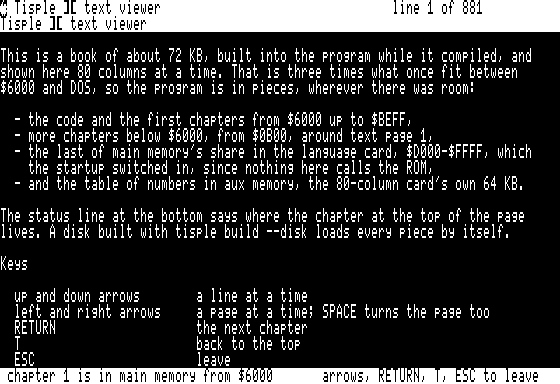

Disks built by the Tisple ][ compiler, booting on its Apple IIe emulator compiled to WebAssembly, with its own boot rom (no Apple rom). Tap a game, then tap to start. A game's screen takes taps and clicks where it has them (Catwiz: everything), the others have buttons, and a keyboard (arrows, return, letters) works too.

CatwizA cat wizard's dice battles in the forest: tap a die, then an enemy.
PlasmaThree sine waves summed for every lo-res block, about 24 fps.
LifeConway's Life on the lo-res screen, 40 x 48 cells.
SnakeLo-res snake: steer to the orange food, miss the walls.
BookA 72 KB book in 80 columns, across main, aux and the language card.